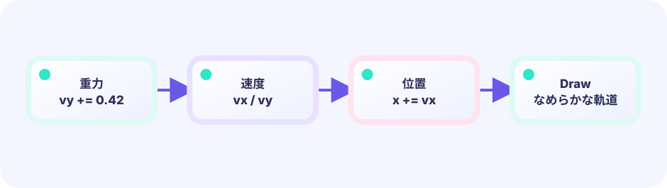
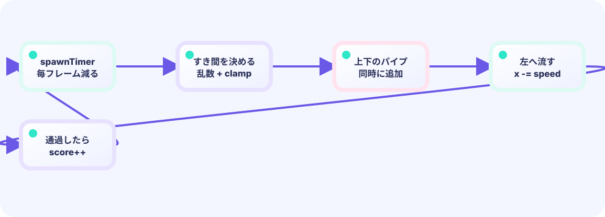

UPDATE
入力・重力・当たり判定。数字を進める場所（復習）。
func (g *Game) Update() errorLEVEL 04 / ACCELERATION IN MOTION
タップすると上へ、何もしないと下へ。まずこの手ざわりを遊び、あとから「速さが少しずつ変わる」と自然な弧になる理由をほどきます。
まず遊ぶ ↓見た目はオリジナル主人公の 海老・天次郎。当たり判定は図形のままです。動きの計算は LEVEL 01と同じく、位置や得点などゲームの中身はUpdateで進めます。Drawは中身を変えず、画面への見せ方だけを担当します。
LEVEL 04 / EBI FLIGHT
クリック、タップ、またはスペースキーで上昇。パイプを抜けるたびに1ポイント。
はじめて読む人へ
画面は上がY=0で、下へ行くほどYが増えます。加速度は『Updateの刻みごとに速さがどれだけ変わるか』。羽ばたき時の負の速度は上向き、正の重力が少しずつ下向きへ戻します。
このページの1本
説明と次のコードを対応させてから、ゲームで変化を確かめよう。
vy = -7.4; vy += gravity; y += vy重力を感じる
速度が整数だけだと動きが急に見えます。0.42のような小数を使うと、細かなUpdateの刻みが積み重なり、なめらかな落下の弧になります。順番は速度を変える→位置を変えるです。


QUICK REVIEW / FROM LEVEL 01
LEVEL 01では、ゲームの中身を進めるUpdateと、それを画面へ見せるDrawを分けました。ここではUpdate側へ加速度を一つ足します。
入力・重力・当たり判定。数字を進める場所（復習）。
func (g *Game) Update() errorいまの数字どおりに描く場所（復習）。
func (g *Game) Draw(screen *ebiten.Image)論理解像度を決める場所（復習）。
func (g *Game) Layout(w, h int) (int, int)DEEP DIVE / ACCELERATION
答えは加速度（かそくど）です。むずかしそうな名前ですが、「速さを少しずつ変える量」と考えれば大丈夫。坂道を転がるボールが、だんだん速くなるのと同じです。
主人公が「いま、どこにいるか」。画面の上が0で、下へ行くほど数字が大きくなります。
birdY = 3201回の更新で、どちらへどれだけ動くか。マイナスなら上へ、プラスなら下へ進みます。velocity = -7.4 は「はばたいた瞬間、上へ7.4ピクセル分の勢いを与える」という初速です。数字が大きいほど、1回のはばたきが強くなります。
velocity = -7.4Updateを1回進めるたび、速度をどれだけ変えるか。この教材では重力として +0.42を足します。画面の上が小さいYなので、ジャンプ初速は負の数（例: -7.4）です。
gravity = +0.42TRY IT / 1 UPDATE AT A TIME
ボタンを押すたび、Update一回分として重力を速度へ足し、その速度だけ主人公の位置を変えます。Drawは計算に参加せず、いまの位置を見せています。
「はばたく」は上向きの速度 -7.4 をセットしてから、Updateを1回進めます。
TRY IT · GO
vy += 0.42 // gravity each Update y += vy if pressed { vy = -7.4 // jump impulse }
—
THE TWO-LINE RULE
速度 = 速度 + 重力つぎに位置 = 位置 + 速度Updateの中では順番が大切です。まず重力で速度を変え、次にその速度で位置を変えます。Updateごとに繰り返すと、自然なジャンプの曲線が生まれます。Yは下方向がプラスなので、上へ飛ぶには速度をマイナスにします。
スタート前に主人公がふわふわ揺れているのは math.Sin(...)（サイン、なめらかな波の形を作る関数）を使っているからです。中学ではまだ習わない関数ですが、「時間とともになめらかに上下する値の表」だと思えば十分です。これは「待っている感」を出すための飾り（発展・任意）で、加速度や当たり判定の仕組みとは関係ありません。省いて動かない位置のままにしても、ゲームは同じように遊べます。
パイプとの当たりは距離（円）ではなく、Xが重なり、かつYが穴の外ならヒット、という四角形どうしの判定です。見た目が丸くても、まずは箱判定で十分なことが多いです。
IN THE REAL GAME
Updateに書くUpdateはゲームの状態を進める場所です。入力を調べ、速度を変え、位置を動かします。Drawは計算後の位置に主人公を描きます。
const gravity = 0.42
const flapSpeed = -7.4
func (g *game) Update() error {
// 押した瞬間、上向きの速さにする
if justPressed() {
g.velocity = flapSpeed
}
// 1. 重力で速度を変える
g.velocity += gravity
// 2. 速度で位置を変える
g.birdY += g.velocity
return nil
}TODAY — まずここを見る
下のコードがこのゲームの本体です（主人公の絵は共有パッケージ internal/hero から読みます）。コピーして手元で開けます。その前に、上の「まずここを見る」3つだけ追ってください。
package main
import (
"fmt"
"image/color"
"math"
"math/rand"
"github.com/hajimehoshi/ebiten/v2"
"github.com/hajimehoshi/ebiten/v2/ebitenutil"
"github.com/hajimehoshi/ebiten/v2/inpututil"
"github.com/hajimehoshi/ebiten/v2/vector"
"github.com/kumagi/EbiShowcase/internal/hero"
"github.com/kumagi/EbiShowcase/internal/lessonlogic"
)
// --- 授業で触る数字 ---
const (
screenWidth = 480
screenHeight = 720
groundY = 650
gravity = 0.42 // 1 tickごとに、速さに足す量（加速度）
flapSpeed = -7.4 // はばたいたときの上向きの速さ
birdX = 128.0
birdRadius = 15.0
pipeWidth = 76.0
gapHeight = 178.0
)
// パイプ 1本（すきまの中心 Y を持つ）
type pipe struct {
x float64
gapY float64
scored bool // もう得点したか
}
type game struct {
birdY float64
velocity float64 // 速さ（マイナス＝上、プラス＝下）
pipes []pipe
score int
best int
frame int
started bool
gameOver bool
rng *rand.Rand
}
func newGame() *game {
g := &game{rng: rand.New(rand.NewSource(7))}
g.reset()
return g
}
func (g *game) reset() {
g.birdY = 320
g.velocity = 0
g.pipes = []pipe{
{x: 560, gapY: 300},
{x: 830, gapY: 390},
{x: 1100, gapY: 265},
}
g.score = 0
g.frame = 0
g.started = false
g.gameOver = false
}
func justPressed() bool {
if inpututil.IsKeyJustPressed(ebiten.KeySpace) || inpututil.IsKeyJustPressed(ebiten.KeyArrowUp) {
return true
}
if inpututil.IsMouseButtonJustPressed(ebiten.MouseButtonLeft) {
return true
}
if len(inpututil.AppendJustPressedTouchIDs(nil)) > 0 {
return true
}
return false
}
func (g *game) hitPipe() bool {
for _, p := range g.pipes {
inX := birdX+birdRadius > p.x && birdX-birdRadius < p.x+pipeWidth
if !inX {
continue
}
gapTop := p.gapY - gapHeight/2
gapBottom := p.gapY + gapHeight/2
hitTop := g.birdY-birdRadius < gapTop
hitBottom := g.birdY+birdRadius > gapBottom
if hitTop || hitBottom {
return true
}
}
return false
}
// --- ここから Update（数字を進める） ---
func (g *game) Update() error {
g.frame++
pressed := justPressed()
if g.gameOver {
if pressed {
g.reset()
}
return nil
}
// スタート前は少し上下にゆらす
if !g.started {
g.birdY = 320 + math.Sin(float64(g.frame)*0.06)*7
if pressed {
g.started = true
g.velocity = flapSpeed
}
return nil
}
// 押した瞬間、上向きの速さにする
if pressed {
g.velocity = flapSpeed
}
// 純粋関数の中で、速さに重力を足してから位置を動かす。
g.birdY, g.velocity = lessonlogic.IntegrateGravity(g.birdY, g.velocity, gravity)
// パイプを左へ流す
for i := range g.pipes {
g.pipes[i].x -= 2.8
if !g.pipes[i].scored && g.pipes[i].x+pipeWidth < birdX {
g.pipes[i].scored = true
g.score++
}
}
// 画面外のパイプを消して、右に新しいパイプを足す
if g.pipes[0].x+pipeWidth < -10 {
lastX := g.pipes[len(g.pipes)-1].x
newPipe := pipe{
x: lastX + 270,
gapY: 225 + g.rng.Float64()*230,
}
g.pipes = append(g.pipes[1:], newPipe)
}
// 地面・天井・パイプに当たったらゲームオーバー
hitGround := g.birdY+17 >= groundY
hitCeiling := g.birdY-17 <= 0
if hitGround || hitCeiling || g.hitPipe() {
g.gameOver = true
if g.score > g.best {
g.best = g.score
}
}
return nil
}
// --- ここから Draw ---
func (g *game) Draw(screen *ebiten.Image) {
g.drawBackground(screen)
for _, p := range g.pipes {
g.drawPipe(screen, p)
}
g.drawGround(screen)
g.drawBird(screen)
ebitenutil.DebugPrintAt(screen, fmt.Sprintf("SCORE %02d", g.score), 198, 28)
if !g.started {
g.drawPanel(screen, "TAP TO FLY", "SPACE / CLICK / TOUCH")
}
if g.gameOver {
g.drawPanel(screen, "GAME OVER", fmt.Sprintf("SCORE %d BEST %d\n\nTAP TO RETRY", g.score, g.best))
}
}
func (g *game) drawBackground(screen *ebiten.Image) {
screen.Fill(color.RGBA{9, 21, 43, 255})
for i := 0; i < 26; i++ {
x := float32((i*83-g.frame/5)%540 - 30)
y := float32(35 + (i*47)%390)
vector.DrawFilledCircle(screen, x, y, float32(1+i%2), color.RGBA{100, 230, 225, 150}, false)
}
for i := 0; i < 10; i++ {
x := float32(i*62 - (g.frame/3)%62)
h := float32(55 + (i*29)%105)
vector.DrawFilledRect(screen, x, groundY-h, 48, h, color.RGBA{14, 39, 67, 255}, false)
}
}
func (g *game) drawGround(screen *ebiten.Image) {
vector.DrawFilledRect(screen, 0, groundY, screenWidth, screenHeight-groundY, color.RGBA{27, 203, 159, 255}, false)
for x := -40 + (g.frame*2)%40; x < screenWidth; x += 40 {
vector.DrawFilledRect(screen, float32(x), groundY+13, 22, 5, color.RGBA{9, 98, 91, 255}, false)
}
}
func (g *game) drawPipe(screen *ebiten.Image, p pipe) {
green := color.RGBA{22, 196, 145, 255}
light := color.RGBA{70, 236, 170, 255}
dark := color.RGBA{6, 103, 91, 255}
topH := float32(p.gapY - gapHeight/2)
bottomY := float32(p.gapY + gapHeight/2)
vector.DrawFilledRect(screen, float32(p.x), 0, pipeWidth, topH, green, false)
vector.DrawFilledRect(screen, float32(p.x-7), topH-28, pipeWidth+14, 28, green, false)
vector.DrawFilledRect(screen, float32(p.x), bottomY, pipeWidth, groundY-bottomY, green, false)
vector.DrawFilledRect(screen, float32(p.x-7), bottomY, pipeWidth+14, 28, green, false)
vector.DrawFilledRect(screen, float32(p.x+9), 0, 8, topH-28, light, false)
vector.DrawFilledRect(screen, float32(p.x+pipeWidth-10), 0, 10, topH, dark, false)
vector.DrawFilledRect(screen, float32(p.x+9), bottomY+28, 8, groundY-bottomY-28, light, false)
vector.DrawFilledRect(screen, float32(p.x+pipeWidth-10), bottomY, 10, groundY-bottomY, dark, false)
}
func (g *game) drawBird(screen *ebiten.Image) {
// オリジナル主人公「海老・天次郎（Ebi Tenjiroh）」を鳥の代わりに描く
hero.DrawCentered(screen, birdX, g.birdY, 44)
}
func (g *game) drawPanel(screen *ebiten.Image, title, detail string) {
vector.DrawFilledRect(screen, 68, 250, 344, 166, color.RGBA{5, 16, 34, 225}, false)
vector.StrokeRect(screen, 68, 250, 344, 166, 3, color.RGBA{45, 226, 194, 255}, false)
ebitenutil.DebugPrintAt(screen, title, 192-len(title)*2, 286)
ebitenutil.DebugPrintAt(screen, detail, 137, 338)
}
func (g *game) Layout(_, _ int) (int, int) {
return screenWidth, screenHeight
}
func main() {
ebiten.SetWindowSize(screenWidth, screenHeight)
ebiten.SetWindowTitle("Ebi Flight — Ebitengine WASM")
if err := ebiten.RunGame(newGame()); err != nil {
panic(err)
}
}
BUILD IT LINE BY LINE / UPDATE工房
速度を先に変え、その速度で位置を変える。この順番を守るだけで、数字が滑らかなジャンプの弧になります。
途中は波かっこが閉じていない場合があり、まだ実行できなくて正常です。各カードでは「何を貼るか」だけでなく、「なぜこの順番か」「Goのどの書き方が役立つか」を一つずつ確認します。コードは完成ゲームの実物から取り出しているため、最後まで貼ると本物のUpdateと同じになります。
frameを一つ増やし、このtickで押されたかを一度だけ読みます。以後は同じpressedを共有するため、処理の途中で入力が変わる心配がありません。
func (g *game) Update() error {
g.frame++
pressed := justPressed()ゲームオーバー後に押されたらresetを呼びます。returnで重力やパイプ処理を止めるため、結果画面の裏で世界が進みません。
if g.gameOver {
if pressed {
g.reset()
}
return nil
}Sinで上下に揺らし、押されたらstartedと上向き速度を設定します。見た目用のbirdYもUpdateで決まり、Drawはその数字を読むだけです。
// スタート前は少し上下にゆらす
if !g.started {
g.birdY = 320 + math.Sin(float64(g.frame)*0.06)*7
if pressed {
g.started = true
g.velocity = flapSpeed
}
return nil
}位置を直接持ち上げず、velocityだけをflapSpeedにします。だから次の重力計算と自然につながります。
// 押した瞬間、上向きの速さにする
if pressed {
g.velocity = flapSpeed
}純粋関数は現在位置・速度・加速度から次の位置と速度を返します。この2行分の物理を独立させると、画面なしでテストできます。
// 純粋関数の中で、速さに重力を足してから位置を動かす。
g.birdY, g.velocity = lessonlogic.IntegrateGravity(g.birdY, g.velocity, gravity)rangeのindexでslice内の本物の要素を書き換えます。scoredフラグは同じパイプから二重点を取らないための記憶です。
// パイプを左へ流す
for i := range g.pipes {
g.pipes[i].x -= 2.8
if !g.pipes[i].scored && g.pipes[i].x+pipeWidth < birdX {
g.pipes[i].scored = true
g.score++
}
}先頭を捨て、末尾の右へ新しいpipeをappendします。配列全体を作り直さず、流れる列を保てます。
// 画面外のパイプを消して、右に新しいパイプを足す
if g.pipes[0].x+pipeWidth < -10 {
lastX := g.pipes[len(g.pipes)-1].x
newPipe := pipe{
x: lastX + 270,
gapY: 225 + g.rng.Float64()*230,
}
g.pipes = append(g.pipes[1:], newPipe)
}地面・天井・パイプのどれかならgameOverです。|| は『どれか一つ』、最後のifは今回の得点がbestを超えた時だけ記録します。
// 地面・天井・パイプに当たったらゲームオーバー
hitGround := g.birdY+17 >= groundY
hitCeiling := g.birdY-17 <= 0
if hitGround || hitCeiling || g.hitPipe() {
g.gameOver = true
if g.score > g.best {
g.best = g.score
}
}
return nil
}Updateは入力とゲーム状態を進める仕事だけを持ちます。Drawを別の絵へ交換しても、ここで組み立てた操作・時間・衝突・勝敗は変わりません。
WITHOUT ACCELERATION
主人公が直線で上がり、直線で落ちるため、機械のような不自然な動きになります。
WITH ACCELERATION
上向きの速度が弱まり、頂点で0に近づき、その後は下向きに速くなります。
YOUR FIRST RULE
game/main.go の game に fastMode bool を足し、Update の g.score++ 直後で if g.score >= 5 { g.fastMode = true } を書きます。次にパイプを進める Update 側の計算だけを fastMode で少し速くします。Draw は旗を読んで色や文字を表示するだけ。go test ./... とローカル実行で5点後を確かめます。
FEEDBACK